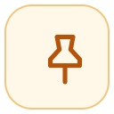
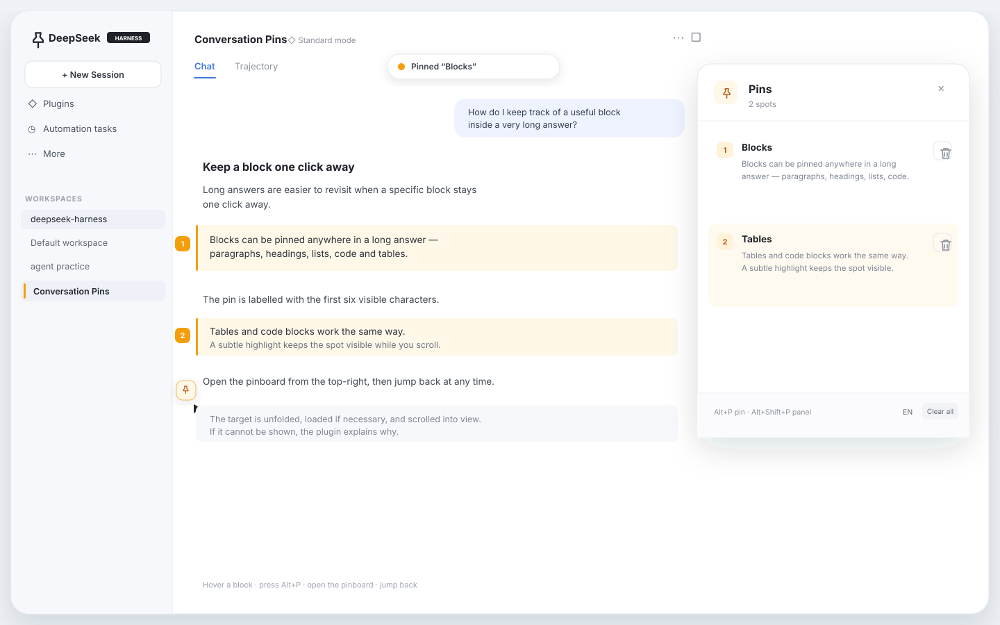

DeepSeek Harness plugin index
Conversation Pins
Pin any paragraph, heading, list, code block or table cell — then jump back from a per-session pinboard. Built for long conversations.

Add this index in DSH
- Open Plugins.
- Enable Custom plugin indexes under Experimental plugins.
- Open Discover and choose Add index source.
- Paste the URL below.
https://yuanxiao2630.github.io/dsh-conversation-pins/index.json
Or install directly
If you already know the repository, skip the index:
dsh plugin --profile web add github:yuanxiao2630/dsh-conversation-pins
Custom indexes are experimental. The index is a static JSON file served by GitHub Pages; DSH checks the format and installs the commit pinned in the entry after confirmation.